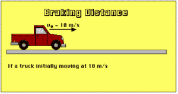

According to What Newton's Law this would happen to passengers not wearing a seat belt?
What Newton's Law will help to calculate the breaking distance of a car?

Lampard’s disallowed goal in the 2010 World Cup game against Germany is analysed using Newton’s laws of motion. The spin of the ball causes it to bounce out of the goal.